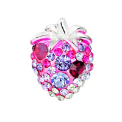
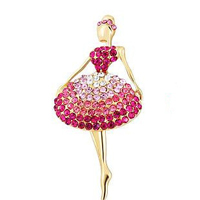

О бижутерии

Женская красота сама по себе – это настоящий бриллиант, который притягивает к себе всеобщее внимание. Однако если отметить и дополнить ее стильными аксессуарами и изящной бижутерией, бриллиант Вашей красоты засияет ослепительно ярко, производя ошеломляющий эффект.
Бижутерия – самый подходящие вариант для тех, кто хочет идти в ногу с модой и в то же время экономить денежные средства. Это отличный вариант украсить себя для молоденьких девушек.
Современная бижутерия по качеству и красоте нисколько не уступает ювелирным украшениям. В бижутерии модные тенденции зачастую проявляются острее.
Каждая девушка хочет, чтобы у нее был особенный, неповторимый стиль! А что, как не бижутерия, подчеркнет твою уникальность? Сверкающее колье, серьги или нежный браслет создадут незабываемый образ стильной юной леди. Тем более если таких украшений больше ни у кого не встретишь, ведь они сделаны своими руками! Такая эффектная бижутерия поможет раскрыть твое очарование и индивидуальность!
Украшения для любой женщины – это не просто аксессуар, это отражение ее индивидуальности. Так как мода в наш век очень капризна, бижутерия является прекрасной заменой настоящим бриллиантам.
Причем очень часто бижутерия играет роль «первой скрипки», являясь стержнем образа. Начиная с середины XX века бижутерия, созданная мастерами высокой моды или художниками, стала цениться иногда даже дороже изделий из драгоценных камней и металлов. Такие изделия делались либо в подчеркнуто примитивном стиле, либо довольно изысканно.
Носить бижутерию, созданную мастером по оригинальному заказу или проекту стало хорошим тоном.
Что такое бижутерия? Бижутерия (от французского слова bijouterie) — ювелирные изделия из недорогих материалов. В производстве используются разнообразные металлы и сплавы, разные сорта прозрачного и цветного стекла, пластмассы, керамики и др. По внешнему виду бижутерия может не уступать «настоящим» ювелирным изделиям, но ее стоимость окажется гораздо ниже. Драгоценности обладают поразительным свойством пробуждать в женщине ее языческую природу, ее подлинное естество. Они - ее защита, власть, игрушки и одновременно королевские регалии.
Женщина преображается, когда заглядывает в витрины ювелирных магазинов. Ведь в драгоценностях всегда есть что-то волшебное,- они заряжают воздух, приковывают взгляды, учащают ритм сердца. Все это прекрасно, но практичные и знающие люди на Западе давно пришли к выводу, что подлинные драгоценности лучше держать в банковских сейфах, а женщины пусть носят бижутерию. И дешевле, и безопаснее, и телохранителей нанимать не надо. Искусство производства бижутерии начиналось именно с того, что известные дизайнеры делали украшения совершенно неотличимыми от подлинников, стоящих миллионы. Коко Шанель вошла в историю не только как дизайнер одежды и создатель знаменитых духов. Она первая начала делать украшения, смешивая настоящие камни с фальшивыми. Мадемуазель Шанель придумала "маленькое черное платье" и украсила его ниткой бус из поддельного жемчуга. В 1932 году она впервые показала свою коллекцию дорогой бижутерии, вдохновившись образцами ювелирных украшений известных мастеров. "Имитация - это самая честная форма лести, - утверждала Шанель. - Украшений должно быть много. Если они настоящие, это отдает хвастовством и дурным вкусом. Я делаю фальшивые и очень красивые. Они даже красивее настоящих... Украшения ставят свою метку на эпохе. Я бы хотела, чтобы моя была отмечена бижутерией Шанель. Так и будет! Я думаю обо всех женщинах, которые, благодаря украшениям Шанель, носят на себе ничего не стоящие состояния". Бижутерия, придуманная Коко Шанель, ее знамениты жемчужные клипсы и ожерелья, украшения из цветных камней не выходят из моды, считаясь признаком хорошего вкуса и элегантности.
В переводе с французского "bijou" означает "драгоценность, сокровище". Конечно, приятно обладать старинными фамильными драгоценностями, но вряд ли такое сокровище сможет украсить женщину, если современный стиль ее одежды не будет соответствовать прабабушкиному ожерелью. Старые камни, имея сложившуюся судьбу, начинают сами диктовать условия игры, а всегда ли это нужно их владельцу?
Мода меняется слишком быстро для того, чтобы успевать с такой же скоростью подбирать под новый костюм дорогие украшения. "Лучшие друг любой девушки - бриллианты!" - это утверждение Мэрилин Монро, прозвучавшее в одном фильме, известно всем. Конечно, бриллианты - это навсегда, но разве что-то вечное и неизменное может считаться модным? Джон Гальяно на протяжении двух последних лет в коллекциях для Дома Кристиан Диор представляет умопомрачительные коллекции украшений, драгоценность которых определяется не материалами, а остротой модной идеи. Это ожерелья с расписанными вручную фарфоровыми медальонами и колье в африканском стиле, огромные перстни-кабошоны и почти средневековые "ошейники" из металлических кружев. Новая бижутерия все дальше уходит от подражания ювелирным изделиям, она широко пользуется искусственными материалами, вызывающе "ненастоящими", таким образом, заявляя о своем месте в мире моды.
Многие из нас очень неравнодушны к бижутерии. Признайтесь, вы невольно останавливаете свой взгляд на ярких стеллажах с этими украшениями…Откуда же пошла эта тяга к самоукрашению? Считается, что первыми украшать себя стали египтяне. Самым распространенным украшением у египтян были вырезанные из камня различные амулеты в форме сердца и глаз, а так же бусы. Они изготавливали их из мягких пород камня, а затем из настоящих драгоценных камней.
Также огромных размеров достигла мода на драгоценные камни у римлян и греков. Например, жена Калигулы запросто приходила в гости, нацепив на себя несколько килограммов драгоценных камней. Да и сам Калигула носил массу драгоценностей, украшая самоцветами одежду и обувь. Даже его лошади ели овес из золотых яслей. С незапамятных времен люди стали прокалывать себе уши и украшать их разными предметами. Мода носить в ушах серьги пришла на Русь от норманнов. Князь Святослав Игоревич носил в одном ухе золотую серьгу, украшенную двумя жемчужинами и рубином. Приблизительно до XVII века сережки носили и мужчины и женщины. В наши дни мужчины вновь стали носить серьги. Но оказывается, что мода эта насчитывает многие сотни лет. Раньше мужчины носили серьги не только на Востоке, где это украшение было обычным атрибутом наряда шахов и раджей. В Европе многие аристократы также вставляли в ухо серьгу. Не обходился без изящной серьги и Генрих Наваррский – король Франции, муж небезызвестной королевы Марго.
В древней Руси браслеты назывались непонятными словами «зарукавья» и «обруча». Их украшали драгоценными камнями и жемчугом, вставляли в них золотые цепочки. Большое значение придавалось застежкам браслетов, которые украшали эмалями. Браслеты популярны и сегодня. Вечерние туалеты предполагают самые разнообразные браслеты. Сегодня очень популярны также браслеты для ног, которые носят на щиколотке.
Различные ожерелья из жемчуга, гранатов назывались на Руси монисто. Раньше ожерелья делались из составленных в сложные узоры и оправленных в золото эмалей. Они украшались драгоценными камнями в высоких коронках. Каждый узор представлял украшения сам по себе и требовал от мастера умения. Понятно, что такие изделия были доступны богатым людям. В XVIII веке великий ювелир Жорж Фредерик Страсс (его именем называются теперь имитации драгоценных камней - "стразы") умел подделывать бриллианты, и, несмотря на искусность и красоту его подделок, он остался для истории лишь авантюристом-мистификатором.
Родившись из подделок, бижутерия долго, вплоть до двадцатых годов нашего века - до переворота в моде, совершенного "Великой Мадемуазелью" Коко Шанель, продолжала стыдливо прикрывать свое "плебейство", подражая по форме и ассортименту "настоящим" украшениям. Шанель дала бижутерии, жившей раньше по "чужим паспортам", право гражданства. Бижутерия с ее легкой руки нашла свою нишу, обрела свой голос в мире украшений. Шанель изменила саму манеру носить и сочетать украшения. Женщины в ее костюмах, покинув камерную атмосферу гостиных и будуаров, стали деловитыми и динамичными. Им понадобились универсальные и элегантно броские вещи, с помощью которых даже небольшой набор туалетов (деловой костюм, "маленькое черное платье", блузка, джемпер) получает индивидуальность, смотрится разнообразно и легко трансформируется по обстоятельствам времени и места. Шанель укрупнила украшения, лишила их привычной ювелирной утонченности. Сделанные из металлов "под золото" и "под серебро", ее знаменитые цепи, как когда-то и стразы, совсем не стремились обманывать. Но их сложные плетения, сочетание блестящих и матовых поверхностей, гибких и круглых, крупных и мелких элементов создавали определенный художественный образ.
Перестав быть драгоценными и ювелирными, украшения, выполненные в больших тиражах, открыли направление - массовая бижутерия. Сегодня бижутерия – это предмет украшения, лоска, красоты, если хотите – роскоши. Ожерелья из бижутерии доступны всем желающим. Они изготовлены из легких сплавов, страз и искусственных камней. Имеют разнообразную форму, фактуру и цвет, что делает возможным украсить ими любой костюм. Бижутерия - прекрасная альтернатива украшениям из драгоценных металлов и камней, она предоставляет женщинам неограниченные возможности выглядеть красиво, модно, стильно и современно.
Создается бижутерия «для вечера" и дневная. А «дневная бижутерия» разделилась на деловую, предназначенную для офисного костюма, и более легкую, всем своим обликом вызывающую образ солнечного дня, отдыха, праздника.
Источник: http://krestiki.wmsite.ru/stati-o-bizhuterii/bizhuterija
© Мир бижутерии «Махаон», 2007–2012
Наш адрес: 443109 Самара, ул. Товарная, 70, офис 16
Тел.: +7 (846) 243-01-53